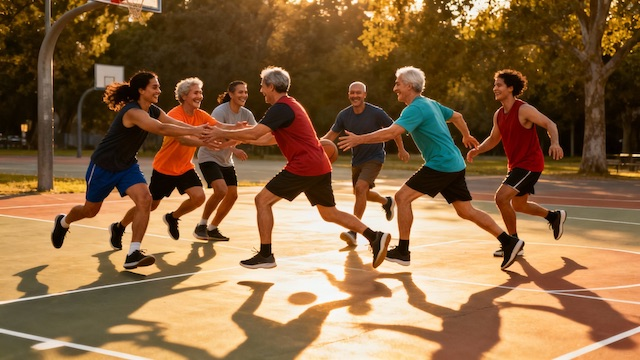

Harness the unique mental health benefits of team sports through evidence-based group exercise protocols showing 22.3% fewer poor mental health days than solo exercise.
Platform Access
This course is included in the Digital Wellness Academy resilience platform for licensed practices.
Register for Access Practice Licensing InfoKey Research Finding
22.3% fewer poor mental health days through team sports vs solo exercise
British Journal of Sports Medicine Meta-Analysis, 2023
While individual physical activity provides substantial mental health benefits, groundbreaking research published in the British Journal of Sports Medicine (2023) reveals that team sports create a powerful multiplier effect through social connection, shared experience, and collective purpose. A comprehensive meta-analysis examining 1.2 million adults found that participants in team sports experienced 22.3% fewer poor mental health days compared to those engaging in solo physical activity — even when controlling for total exercise volume, intensity, and demographic factors. This research fundamentally challenges the assumption that mental health benefits derive solely from physical exertion.
Team sports activate unique neurobiological pathways not engaged by individual exercise. Synchronized group movement triggers sustained oxytocin release — the "bonding hormone" — reducing amygdala reactivity to social threats, enhancing trust, and creating feelings of safety. When teams move in coordinated patterns, neural entrainment creates states of "collective flow" where individual self-consciousness dissolves into group consciousness. This experience directly combats the isolation and disconnection underlying depression and anxiety. The social accountability of team membership also drives adherence: team sports participants maintain consistent activity 73% longer than solo exercisers, delivering sustained long-term mental health benefits.
Baumeister and Leary's seminal "need to belong" research demonstrates that humans have a fundamental psychological drive for meaningful social connections and group membership. Team sports provide structured environments where this need is consistently met through shared identity, regular social contact, mutual interdependence, and collective purpose. Studies on group exercise adherence demonstrate that team participants maintain regular activity 73% longer than solo exercisers, primarily due to genuine friendships that develop through shared physical experience. For adults struggling with social isolation, social anxiety, or the challenge of forming new friendships after major life transitions, recreational team sports provide low-pressure social environments where connection naturally emerges through shared activity rather than forced conversation.
Built on peer-reviewed research from leading journals and institutions examining team sports, social connection, sports psychology, and mental health outcomes.
22.3% fewer poor mental health days for team sports vs solo exercise (1.2 million adults)
Comprehensive meta-analysis examining 1.2 million adults found team sports participants experienced 22.3% fewer poor mental health days compared to solo exercisers (95% CI: 18.7–25.9%), after controlling for exercise volume, intensity, and demographics. Team sports showed significantly greater reductions in depression (effect size d = -0.57) and anxiety (d = -0.51) compared to individual exercise. The protective effect was particularly pronounced for socially isolated adults, with team sports reducing depression risk by 41% in this population.
Mental health organizations including the American Psychological Association and the UK National Health Service now explicitly recommend team sports and group physical activity as evidence-based interventions for depression, anxiety, social isolation, and stress-related disorders. The research consistently shows combining physical activity with social connection, belonging, and shared purpose creates mental health outcomes superior to either element alone.
Research published in the British Journal of Sports Medicine (2023) found team sports participants experienced 22.3% fewer poor mental health days compared to solo exercisers, even controlling for total activity. Team sports provide unique benefits: social connection satisfying the fundamental need for belonging (34% reduction in loneliness within 12 weeks); enhanced neurochemistry through sustained oxytocin release reducing social anxiety; collective flow states where individual consciousness merges with group consciousness; and social accountability helping participants maintain consistent activity 73% longer than solo exercisers.
Adult recreational leagues exist specifically for non-athletes. Seek leagues labeled "recreational," "social," "beginner," or "no experience necessary." Consider low-barrier sports: softball, kickball, bowling, ultimate frisbee, pickleball, volleyball, and dragon boat racing. Use platforms like Meetup, ZogSports, Volo Sports, or local parks and recreation departments. Many leagues allow individual free-agent registration. Remember: recreational sports are about social connection and fun, not athletic performance — you belong there exactly as you are.
Competitive anxiety is legitimate but can be effectively managed. Choose explicitly recreational/social leagues minimizing competitive pressure. Use evidence-based sports psychology techniques: progressive exposure, cognitive reframing, mindfulness, and pre-activity routines. Communicate with teammates — most recreational athletes relate and will actively encourage you. Research shows that facing manageable challenges in supportive contexts builds stress resilience that transfers to other life domains. Many people with generalized anxiety find team sports provide controlled environments to practice anxiety management while experiencing the calming effects of oxytocin release through social bonding.
Online platforms: ZogSports, Volo Sports, Playground, and Players Sports Group operate in major cities offering softball, kickball, volleyball, ultimate frisbee, dodgeball, and more — marketed explicitly as social sports leagues. Meetup.com lists informal groups. Local resources: Parks and Recreation departments run affordable adult leagues; YMCAs and community centers offer adult programs. Sport-specific organizations for soccer, softball, volleyball, rowing, and recreational hockey operate in most communities. Look for leagues labeled "recreational," "social," or "all skill levels welcome."
Many introverts thrive in team sports when approached strategically. Team sports provide structured social contexts with clear roles, shared focus on the game, and defined start/end times — you're not expected to make conversation, connection emerges naturally. The shared external focus makes social interaction feel less intense. Team sports create conditions for genuine close friendships through repeated shared experiences — exactly the type of relationships introverts value. You can manage social energy by choosing appropriate schedules and skipping optional social events when needed. Many introverts report team sports provide the meaningful connection they crave without the exhausting demands of typical social situations.
No — the mental health benefits don't depend on winning. Psychological advantages come from social connection, shared purpose, physical activity, and collective flow — none requiring competitive drive. Research shows team cohesion buffers against distress even during losing seasons. Oxytocin and endorphin release occur from synchronized group movement and social bonding, not from victory. Seek explicitly recreational leagues focused on fun and friendship. Measure success through non-competitive metrics: Did I show up consistently? Did I support my teammates? Am I building genuine friendships? Did I enjoy myself and feel connected?
First lesson available now. Full curriculum accessible after registration on the platform.
If you are experiencing a mental health crisis, call or text 988 for immediate support. This course is educational — not a substitute for professional clinical care.
This course is part of the Digital Wellness Academy platform. Ask your psychiatric provider about getting access as part of your treatment plan.
Get Access →43 course pages indexed by Google and AI search. License the platform and own this discovery — with your branding, your provider portal, and RTM billing support.
See How It Works →